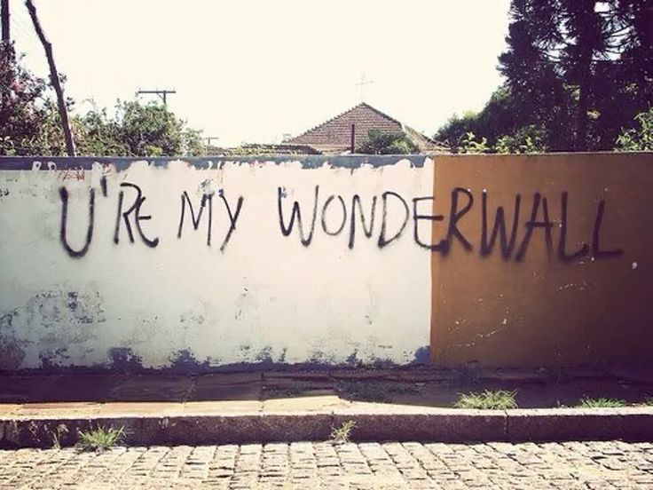

Oasis 綠洲合唱團：英倫搖滾傳奇
1. 樂團簡介
起源： 1991年成立於英國曼徹斯特。
靈魂人物： 蓋勒格兄弟 —— Noel Gallagher（詞曲創作/吉他）與 Liam Gallagher（主唱）。
地位： 90年代英倫搖滾（Britpop）浪潮的領軍者，被譽為「披頭四接班人」。
2. 經典紀錄與代表作
巔峰專輯： * 《Definitely Maybe》(1994) - 史上銷售最快出道專輯之一。
《(What's the Story) Morning Glory?》(1995) - 史上最暢銷英國專輯之一。
必聽神曲： * 《Wonderwall》、《Don't Look Back In Anger》、《Live Forever》、《Champagne Supernova》、《Supersonic》。
經典現場： 1996年 Knebworth 演唱會，吸引25萬人朝聖（當時全英國4%人口參與搶票）。
3. 戲劇性的解散與回歸
解散 (2009)： 兩兄弟在巴黎演出後台爆發肢體衝突，Noel 隨即退團，樂團停擺長達15年。
復出 (2024-2025)： 2024年8月驚喜宣布破冰重組，並於2025年啟動「Oasis Live '25」全球巡迴演唱會。
4. 樂團特色
音樂： 強烈的吉他音牆、極具穿透力的嗓音，以及充滿藍領階級狂放氣息的歌詞。
影響力： 不僅是音樂象徵，更代表了 90 年代英國的酷英倫（Cool Britannia）文化
